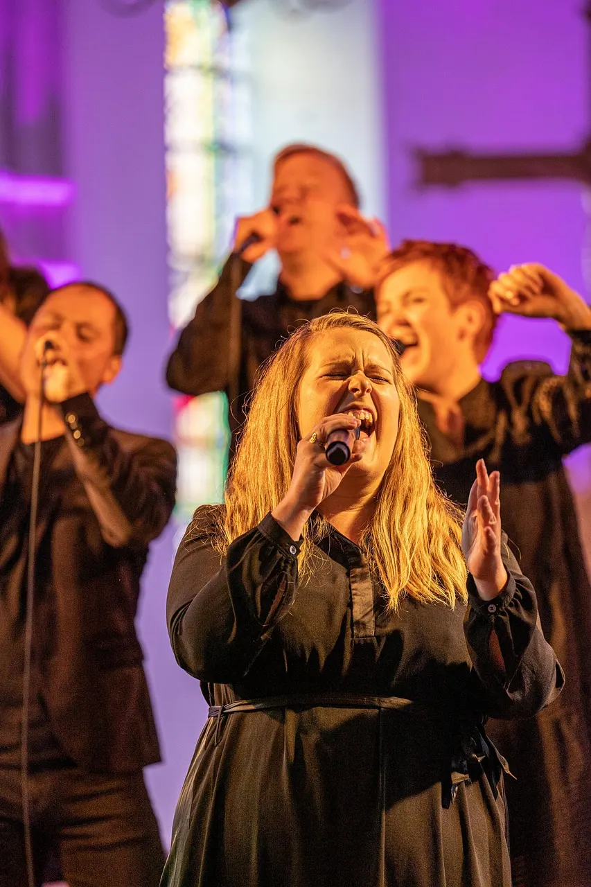
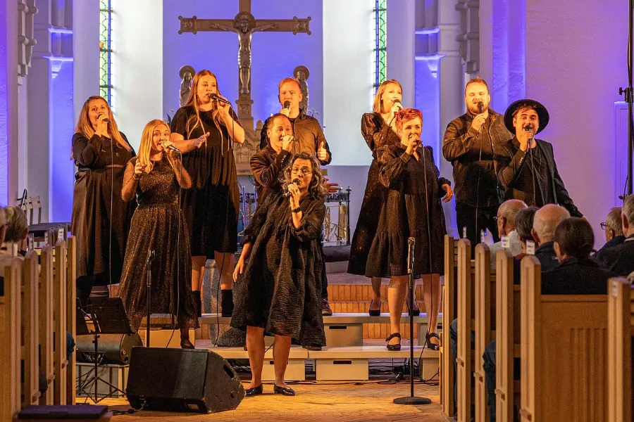
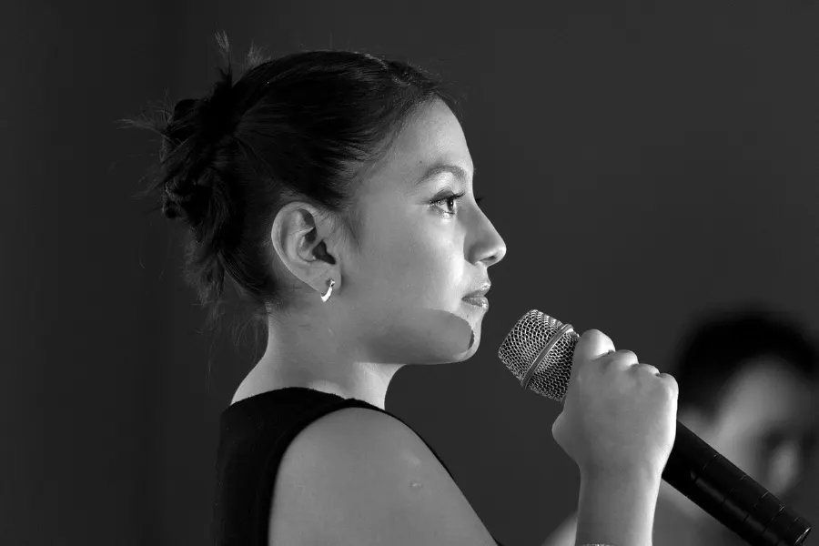
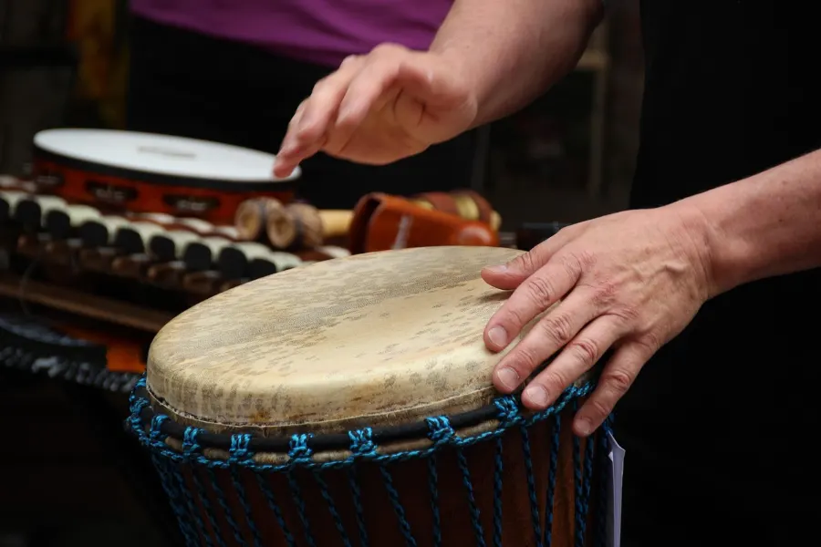
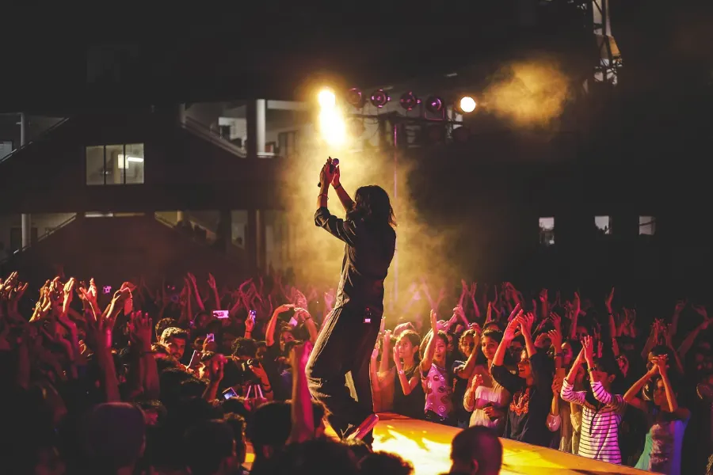
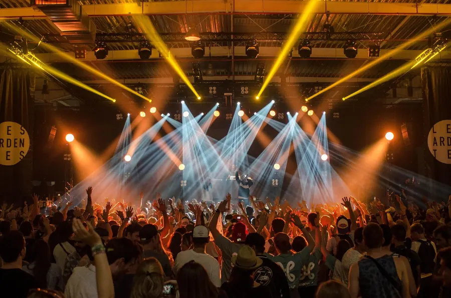
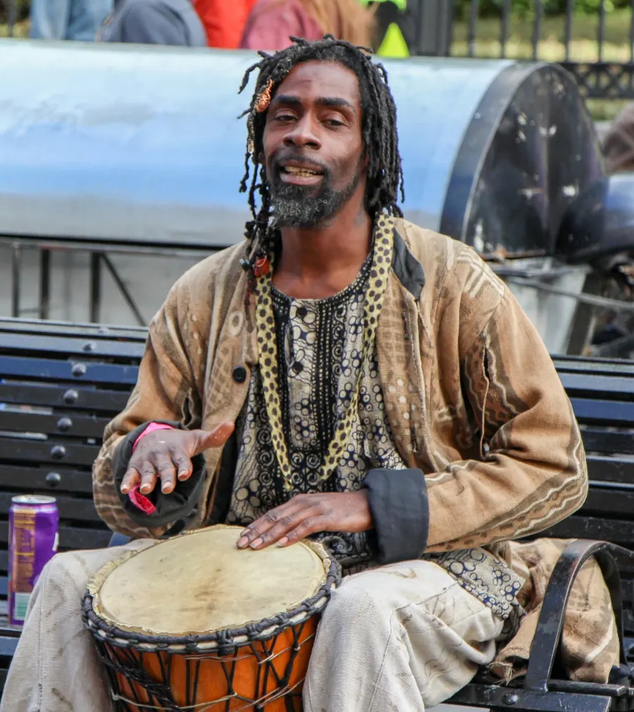
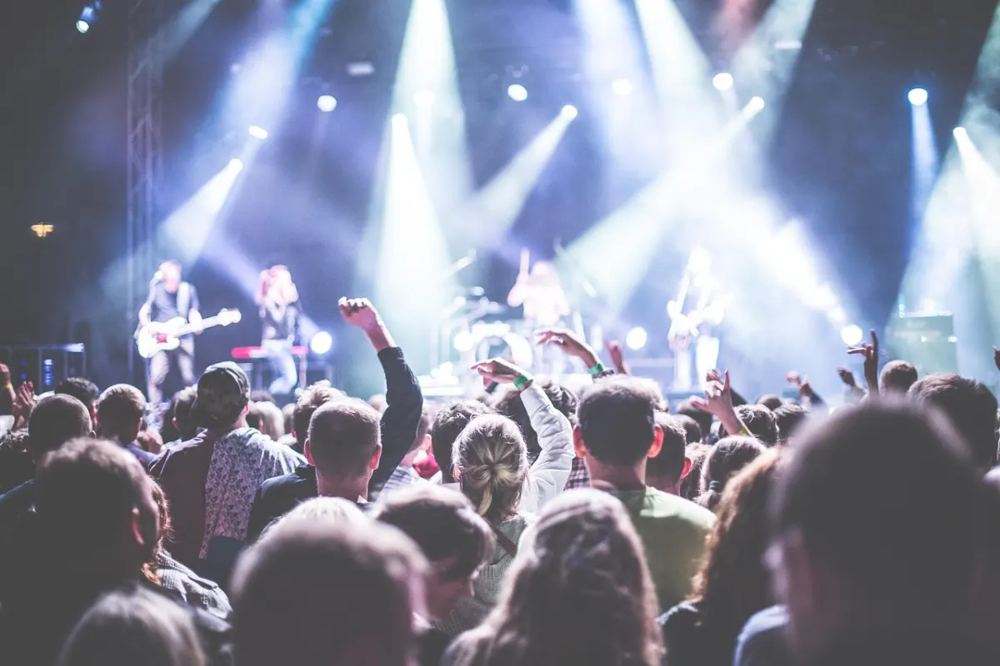
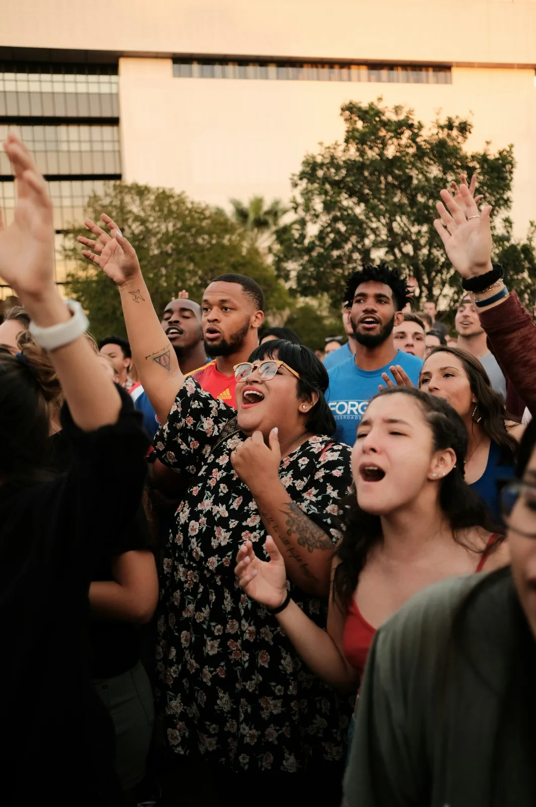
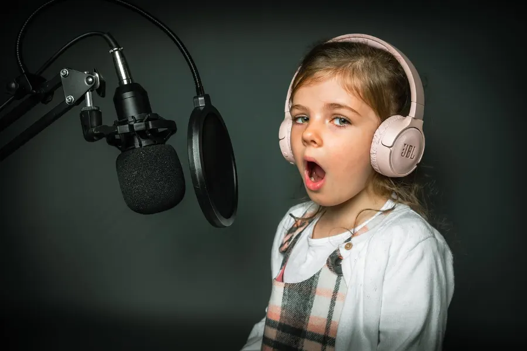

En groupe
Chant collectif gospel
Chanter à plusieurs voix, apprendre à écouter le groupe et trouver sa place dans le chœur.
Association culturelle · Nice
Ateliers de chant gospel collectif et individuel, travail du souffle et de la voix, initiation aux instruments de musique.
Ouvert dès 8 ans, débutants comme confirmés

L'association
Une association culturelle niçoise qui fait de la voix un espace d'expression, de partage et d'échanges entre les cultures.

Développer sa voix, sa créativité et sa confiance en soi, dans une ambiance conviviale et bienveillante.
Mwasa Musiki propose des ateliers de chant collectif gospel, des cours de chant individuel, des stages d'échauffement vocal et de travail du souffle, ainsi qu'une initiation aux instruments de musique.
Au-delà des ateliers, l'association accompagne ses adhérents dans leurs projets d'échanges culturels : concerts, festivals et salons internationaux.
Nos ateliers
Chaque atelier est ouvert à tous les niveaux. On vient pour apprendre, pour progresser ou simplement pour le plaisir de chanter avec d'autres.
Chanter à plusieurs voix, apprendre à écouter le groupe et trouver sa place dans le chœur.

Un accompagnement sur mesure pour travailler sa technique, sa justesse et son interprétation.
Échauffement vocal et respiration pour poser sa voix, gagner en endurance et chanter sans se fatiguer.

Découvrir les bases d'un instrument et accompagner le chant, à son rythme.
Projets
Mwasa Musiki accompagne ses adhérents dans leurs projets d'échanges culturels, pour que le travail des ateliers rencontre son public.

Monter sur scène avec le chœur ou en solo, et partager le répertoire travaillé pendant l'année.

Participer à des événements musicaux à Nice et ailleurs, comme la Fête de la musique.

Rencontrer d'autres artistes et d'autres cultures lors de salons et d'échanges internationaux.
Agenda
Concerts, stages et rendez-vous de l'association. Les dates passées disparaissent automatiquement.
Aucun événement annoncé pour le moment. Revenez bientôt !
Actualité
Les temps forts de l'association, à retrouver aussi sur le Portail des associations de Nice Côte d'Azur.

Racontez ce qui s'est passé ou ce qui arrive.

Le 21 juin, Mwasa Musiki se joint au monde entier pour célébrer la musique à Nice, avec une scène ouverte à toutes les voix.
En savoir plusAdhésion
En adhérant, vous découvrez le plaisir de chanter et de faire de la musique avec d'autres. Les ateliers accueillent enfants à partir de 8 ans, adolescents, adultes et seniors, quel que soit leur niveau.

Contact
Pour un renseignement sur les ateliers, un projet de concert ou un partenariat, l'association vous répond.
Formulaire de contact de l'association sur le Portail des associations.
Contacter Mwasa MusikiAteliers à Nice, Alpes-Maritimes. Fiche complète sur le portail municipal.
Voir la fiche